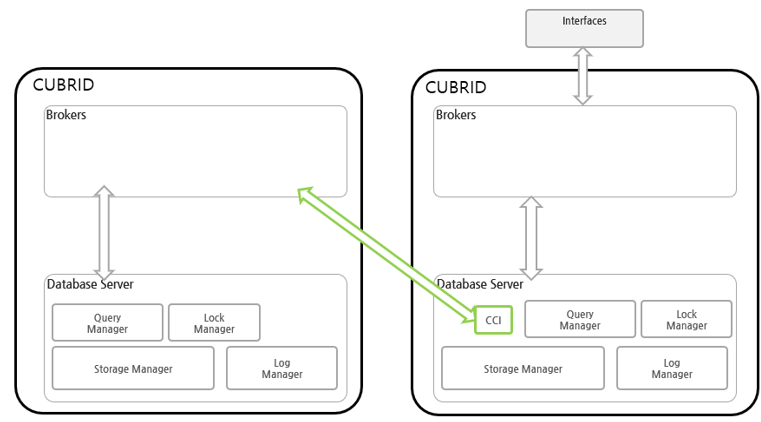
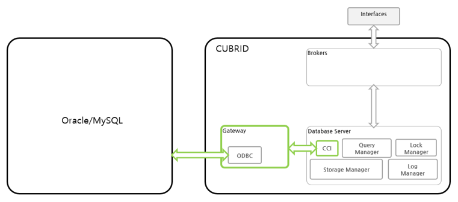

CUBRID DBLink
CUBRID DBLink 소개
데이터베이스에서 정보를 조회하다 보면 종종 외부 데이터베이스의 정보 조회가 필요한 경우가 있다. 이렇게 외부 데이터베이스의 정보를 조회하기 위해서 CUBRID DBLink를 이용하면 타 데이터베이스의 정보를 조회할 수 있다.
CUBRID DBLink는 동일 기종인 CUBRID와 이기종인 Oracle, MySQL, MariaDB의 데이터베이스의 정보를 조회할 수 있도록 기능을 제공하고 있다. 외부 데이터베이스의 정보를 마치 하나의 데이터베이스에서 조회하는 것과 같은 효과를 발휘한다. 단 외부 데이터베이스를 여러 개 설정은 가능 하나, 정보를 조회할 때는 한 개의 타 데이터베이스의 정보만 조회할 수 있다.
CUBRID DBLink는 SELECT의 FROM절에 연결될 서버와 실행될 질의를 명시한 DBLINK 구문 형식과 원격 테이블 (테이블 확장명) 형식으로 사용 가능하며, INSERT/REPLACE/UPDATE/DELETE/MERGE구문은 원격 테이블 형식만 사용할 수 있다.
CUBRID DBLink 구성도
CUBRID DBLink는 동일기종 간에 DBLink와 이기종 간의 DBLink를 지원한다.
동일기종 간의 DBLink 구성도
동일기종의 외부 데이터베이스의 정보를 조회하기 위한 구성도를 보면 Database Server에서 CCI를 이용하여 동일기종의 Brokers에 접속하여 외부 데이터베이스의 정보를 조회할 수 있다.

이기종 간의 DBLink 구성도
이기종 데이터베이스의 정보를 조회하기 위한 구성도를 보면 게이트웨이를 통해서 이기종 데이터베이스의 정보를 조회할 수 있다. 게이트웨이는 연결하는 데이터베이스의 ODBC(Open DataBase Connectivity) 드라이버를 이용하고 있다.

DBLink를 위한 게이트웨이
게이트웨이는 CUBRID 데이터베이스와 이기종 데이터베이스 간의 중개하는 미들웨어로 브로커(Broker)와 유사하다. 게이트웨이는 이기종 데이터베이스 서버 (Oracle/MySQL/MariaDB 등)에 연결하고 데이터를 조회하여 CUBRID 데이터베이스 서버에 전달하는 역할을 한다.
게이트웨이를 포함하는 큐브리드 시스템은 아래 그림과 같이 cub_gateway, cub_cas_cgw를 포함한 다중 계층 구조를 가진다.

cub_cas_cgw
cub_cas_cgw(CAS Gateway)는 CUBRID Database Server에서 외부의 Database의 연결을 요청하는 공용 서버 역할을 한다. 또한, cub_cas_cgw는 데이터베이스 서버의 클라이언트로 동작하여 CUBRID Database Server의 요청에 의해 외부 데이터베이스 서버와 연결을 제공한다. 서비스 풀(service pool) 내에서 구동되는 cub_cas_cgw의 개수는 cubrid_gateway.conf 설정 파일에 지정할 수 있으며, cub_gateway에 의해 동적으로 조정된다.
cub_gateway
cub_gateway는 CUBRID Database Server와 cub_cas_cgw 사이의 연결을 중개하는 기능을 수행한다. 즉, CUBRID Database Server가 접근을 요청하면, cub_gateway는 공유 메모리(shared memory)를 통해 cub_cas_cgw의 상태를 파악하여 할당 가능한 cub_cas_cgw에게 요청을 전달하고, 해당 cub_cas_cgw로부터 전달받은 요청에 대한 처리 결과를 CUBRID Database Server에게 반환한다.
또한, cub_gateway는 서비스 풀 내의 cub_cas_cgw 개수를 조정하여 서버 부하를 관리하고, cub_cas_cgw의 구동 상태를 모니터링 및 관리한다. 만약, CUBRID Database Server의 요청을 cub_cas_cgw 1에게 전달하였는데, 비정상적인 종료로 인해 cub_cas_cgw 1과의 연결이 실패하면, cub_gateway는 CUBRID Database Server에게 연결 실패에 관한 에러 메시지를 전송하고 cub_cas_cgw 1을 재구동한다. 새롭게 구동된 cub_cas_cgw 1은 정상적인 대기 상태가 되어, 새로운 응용 클라이언트의 요청에 의해 재연결된다.
공유 메모리
공유 메모리에는 cub_cas_cgw의 상태 정보가 저장되며, cub_gateway는 공유 메모리에 저장된 cub_cas_cgw의 상태 정보를 참조하여 CUBRID Database Server와의 연결을 중개한다. 공유 메모리에 저장된 cub_cas_cgw의 상태 정보를 통해 시스템 관리자는 어떤 cub_cas_cgw가 현재 작업을 수행 중인지 확인할 수 있다.
게이트웨이 구동
게이트웨이를 구동하기 위하여 다음과 같이 입력한다.
$ cubrid gateway start
이미 게이트웨이가 구동 중이라면 다음과 같은 메시지가 출력된다.
$ cubrid gateway start
@cubrid gateway is running.
게이트웨이 종료
게이트웨이를 종료하기 위하여 다음과 같이 입력한다.
$ cubrid gateway stop
이미 게이트웨이가 종료되었다면 다음과 같은 메시지가 출력된다.
$ cubrid gateway stop
@ cubrid gateway stop
++ cubrid gateway is not running.
게이트웨이 재시작
게이트웨이를 재시작하기 위하여 다음과 같이 입력한다.
$ cubrid gateway restart
게이트웨이 상태 확인
cubrid gateway status 는 다양한 옵션을 제공하며, 각 게이트웨이의 처리 완료된 작업 수, 처리 대기중인 작업 수를 포함한 게이트웨이 상태 정보를 확인할 수 있도록 한다.
게이트웨이 상태 정보는 브로커와 동일하므로 브로커 상태 확인을 참조 한다.
cubrid gateway status [options] [expr]
CUBRID 서비스 시작시 게이트웨이 함께 시작
CUBRID 서비스 시작(cubrid service start) 시 게이트웨이 를 같이 시작되게 하려면, cubrid.conf 파일의 service 파라메터에 gateway 를 설정한다.
# cubrid.conf
[service]
service=server,broker,gateway,manager
...
CUBRID DBLINK 설정
CUBRID DBLink를 사용하기 위한 설정은 동일기종 DBLink와 이기종 DBLink의 설정이 다르다.
동일기종 DBLink 설정
위의 동일기종 구성도를 보면 원격지 데이터베이스의 Broker에 연결을 해야 하므로 원격지 데이터베이스의 Broker 설정이 필요 하다. 이 설정은 일반적인 Broker 설정과 동일하다.
이기종 DBLink 설정
이기종 데이터베이스(Oracle/MySQL/MariaDB)와 연결하기 위해서는 cubrid_gateway.conf 와 unixODBC 설치, ODBC Driver 정보 설정이 필요 하다.
게이트웨이 설정 파일
CUBRID 설치 시 생성되는 기본 게이트웨이 설정 파일인 cubrid_gateway.conf 에서 사용되는 파라메터는 브로커 파라메터와 거의 동일 하며, 추가로 반드시 변경해야 할 일부 파라메터가 포함된다. 기본으로 포함되지 않는 파라메터의 값은 직접 추가/편집해서 사용하면 된다. 다음은 설치 시 기본으로 제공되는 cubrid_gateway.conf 파일 내용이다.
[gateway]
MASTER_SHM_ID =50001
ADMIN_LOG_FILE =log/gateway/cubrid_gateway.log
[%oracle_gateway]
SERVICE =OFF
SSL =OFF
APPL_SERVER =CAS_CGW
BROKER_PORT =53000
MIN_NUM_APPL_SERVER =5
MAX_NUM_APPL_SERVER =40
APPL_SERVER_SHM_ID =53000
LOG_DIR =log/gateway/sql_log
ERROR_LOG_DIR =log/gateway/error_log
SQL_LOG =ON
TIME_TO_KILL =120
SESSION_TIMEOUT =300
KEEP_CONNECTION =AUTO
CCI_DEFAULT_AUTOCOMMIT =ON
APPL_SERVER_MAX_SIZE =256
CGW_LINK_SERVER =ORACLE
CGW_LINK_SERVER_IP =localhost
CGW_LINK_SERVER_PORT =1521
CGW_LINK_ODBC_DRIVER_NAME =Oracle_ODBC_Driver
CGW_LINK_CONNECT_URL_PROPERTY =
[%mysql_gateway]
SERVICE =OFF
SSL =OFF
APPL_SERVER =CAS_CGW
BROKER_PORT =56000
MIN_NUM_APPL_SERVER =5
MAX_NUM_APPL_SERVER =40
APPL_SERVER_SHM_ID =56000
LOG_DIR =log/gateway/sql_log
ERROR_LOG_DIR =log/gateway/error_log
SQL_LOG =ON
TIME_TO_KILL =120
SESSION_TIMEOUT =300
KEEP_CONNECTION =AUTO
CCI_DEFAULT_AUTOCOMMIT =ON
APPL_SERVER_MAX_SIZE =256
CGW_LINK_SERVER =MYSQL
CGW_LINK_SERVER_IP =localhost
CGW_LINK_SERVER_PORT =3306
CGW_LINK_ODBC_DRIVER_NAME =MySQL_ODBC_Driver
CGW_LINK_CONNECT_URL_PROPERTY ="charset=utf8;PREFETCH=100;NO_CACHE=1"
[%mariadb_gateway]
SERVICE =OFF
SSL =OFF
APPL_SERVER =CAS_CGW
BROKER_PORT =59000
MIN_NUM_APPL_SERVER =5
MAX_NUM_APPL_SERVER =40
APPL_SERVER_SHM_ID =59000
LOG_DIR =log/gateway/sql_log
ERROR_LOG_DIR =log/gateway/error_log
SQL_LOG =ON
TIME_TO_KILL =120
SESSION_TIMEOUT =300
KEEP_CONNECTION =AUTO
CCI_DEFAULT_AUTOCOMMIT =ON
APPL_SERVER_MAX_SIZE =256
CGW_LINK_SERVER =MARIADB
CGW_LINK_SERVER_IP =localhost
CGW_LINK_SERVER_PORT =3306
CGW_LINK_ODBC_DRIVER_NAME =MariaDB_ODBC_Driver
CGW_LINK_CONNECT_URL_PROPERTY =
게이트웨이 파라메터
이기종 데이터 베이스와 DBLink를 사용하기 위해서 설정하는 파라메터이다.
각각의 파라메터 의미는 이기종 데이터베이스 별로 약간 차이가 있다.
Parameter Name |
Type |
Value |
|---|---|---|
APPL_SERVER |
string |
|
CGW_LINK_SERVER |
string |
|
CGW_LINK_SERVER_IP |
string |
|
CGW_LINK_SERVER_PORT |
int |
|
CGW_LINK_ODBC_DRIVER_NAME |
string |
|
CGW_LINK_CONNECT_URL_PROPERTY |
string |
APPL_SERVER
APPL_SERVER 는 게이트웨이의 응용 서버 이름을 설정하는 부분으로 반드시 CAS_CGW 로 설정해야 한다.
CGW_LINK_SERVER
CGW_LINK_SERVER 는 CAS_CGW로 연결하여 사용할 이기종 데이터베이스의 이름을 설정해야 한다. 현재 지원하는 데이터베이스는 Oracle, MySQL, MariaDB이다.
CGW_LINK_SERVER_IP
CGW_LINK_SERVER_IP 는 CAS_CGW와 연결할 이기종 데이터베이스의 IP 주소를 설정해야 한다.
참고
Oracle인 경우, tnsnames.ora의 net_service_name을 이용하므로 해당 파라메터는 사용하지 않는다.
자세한 내용은 Oracle Database에 연결을 위한 연결정보 설정을 참고한다.
CGW_LINK_SERVER_PORT
CGW_LINK_SERVER_PORT 는 CAS_CGW와 연결할 이기종 데이터베이스의 Port 번호를 설정해야 한다.
참고
Oracle인 경우, tnsnames.ora의 net_service_name을 이용하므로 해당 파라메터는 사용하지 않는다.
자세한 내용은 Oracle Database에 연결을 위한 연결정보 설정을 참고한다.
CGW_LINK_ODBC_DRIVER_NAME
CGW_LINK_ODBC_DRIVER_NAME 는 CAS_CGW와 연결할 때 이기종 데이터베이스에서 제공하는 ODBC Driver 이름을 설정해야 한다.
참고
Windows에서는 해당 이기종 데이터베이스의 ODBC Driver가 설치된 경우, ODBC 데이터 원본 관리자를 통해 Driver 이름을 확인할 수 있다.
Linux는 odbcinit.ini에 직접 Driver 이름을 명시해야 한다.
자세한 내용은 ODBC Driver 정보 설정을 참고한다.
CGW_LINK_CONNECT_URL_PROPERTY
CGW_LINK_CONNECT_URL_PROPERTY 는 이기종 데이터베이스 연결을 위한 연결 문자열(Connection String)에 사용되는 연결 속성(property)을 작성한다.
참고
연결 속성(property)는 데이터베이스별로 각각 다르므로 아래의 사이트를 참조한다.
Oracle : https://docs.oracle.com/cd/B19306_01/server.102/b15658/app_odbc.htm#UNXAR418
unixODBC 설치
unixODBC 드라이버 관리자는 Linux 및 UNIX 운영 체제에서 ODBC 드라이버 와 함께 사용할 수 있는 오픈 소스 ODBC 드라이버 관리자이다. 게이트웨이에서는 ODBC를 사용하기 위해서 unixODBC를 반드시 설치해야 한다.
참고
Windows에서는 기본으로 설치된 Microsoft® ODBC 데이터 원본 관리자 를 사용하면 된다.
unixODBC 설치 방법
$ wget https://www.unixodbc.org/unixODBC-2.3.9.tar.gz
$ tar xvf unixODBC-2.3.9.tar.gz
$ cd unixODBC-2.3.9
$ ./configure
$ make
$ make install
ODBC Driver 정보 설정
unixODBC가 설치한 후, 연결할 데이터베이스의 ODBC Driver 정보를 등록해야 한다.
ODBC Driver 정보는 odbcinst.ini를 직접 수정해서 등록한다.
아래의 내용은 MySQL, Oracle, MariaDB ODBC Driver 정보를 설정한 예제이다.
[MySQL ODBC 8.0 Unicode Driver]
Description = MySQL ODBC driver v8.0
Driver=/usr/lib64/libmyodbc8w.so
[Oracle 11g ODBC driver]
Description = Oracle ODBC driver v11g
Driver = /home/user/oracle/instantclient/libsqora.so.19.1
[mariadb odbc 3.1.13 driver]
Description= mariadb odbc driver 3.1.13
Driver=/home/user/mariadb-odbc-3.1.13/lib64/mariadb/libmaodbc.so
참고
참고로, 위의 예제에서 드라이버 이름은 각각 “MySQL ODBC 8.0 Unicode Driver”, “Oracle 11g ODBC driver” 와 “mariadb odbc 3.1.13 driver” 이다.
DBLink를 위한 Oracle 설정
Oracle 환경설정
DBLink에서 Oracle을 사용하기 위해서는 Oracle Instant Client 설치 및 설정, 연결 정보 설정, Oracle Database 환경변수 설정 및 게이트웨이 설정을 반드시 해야 한다.
오라클 인스턴트 클라이언트 ODBC 설치
Oracle Instant Client 다운로드 사이트에서 ODBC Package와 Basic Package 다운받아 동일한 디렉터리에 압축을 풉니다.
unzip instantclient-basic-linux.x64-19.20.0.0.0dbru.zip
unzip instantclient-odbc-linux.x64-19.20.0.0.0dbru.zip
Oracle Instant Client 다운로드 사이트: https://www.oracle.com/database/technologies/instant-client/downloads.html
오라클 인스턴트 클라이언트 환경변수 설정
export ORACLE_INSTANT_CLIENT=/home/user/oracle/instantclient
export PATH=$ORACLE_INSTANT_CLIENT:$PATH
export LD_LIBRARY_PATH=$ORACLE_INSTANT_CLIENT:$LD_LIBRARY_PATH
Oracle Database에 연결을 위한 연결정보 설정
Oracle Database에 연결을 하기 위해서는 연결정보를 가지고 있는 tnsnames.ora 파일을 수정해야 한다. 아래의 기본 형식에 HOST, PORT, SERVICE_NAME 이 세 항목에 연결정보를 작성해야 한다. 연결정보를 작성한 tnsnames.ora 파일은 TNS_ADMIN 환경변수에서 디렉터리 경로를 설정해야 한다. TNS_ADMIN설정 방법은 TNS_ADMIN 환경변수 설정을 참고한다.
tnsnames.ora 파일의 기본 형식
net_service_name =
(DESCRIPTION=
(ADDRESS = (PROTOCOL = TCP)(HOST = xxx.xxx.xxx.xxx)(PORT = 1521)
)
(CONNECT_DATA =
(SERVICE_NAME=service_name)
)
)
net_service_name: 데이터베이스 연결을 위한 네트 서비스 이름이며, connection url의 db_name에 사용하는 이름이다.
HOST: 데이터베이스에 연결하려는 IP 주소 또는 서버 이름이다.
PORT: 연결에 필요한 포트이다. 대부분의 경우 기본 포트는 1521이다.
SERVICE_NAME: 연결하려는 데이터베이스의 이름이다.
참고
참고로, net_service_name 이 중복으로 작성이 되어도 에러가 발생되지 않는다. 하지만 중복된 다른 서버에 연결될 수 있으므로, net_service_name 이 반드시 중복되지 않게 설정해야 한다.
Oracle Database 환경변수 설정
Oracle database server 에 아래의 환경변수를 설정해야 한다.
export ORACLE_SID=XE
export ORACLE_BASE=/u01/app/oracle
export ORACLE_HOME=$ORACLE_BASE/product/11.2.0/xe
export PATH=$ORACLE_HOME/bin:$PATH
ORACLE_SID는 시스템 식별자이다.
ORACLE_BASE은 오라클 기본 디렉터리 구조이다.
ORACLE_HOME은 오라클 데이터베이스가 설치된 경로이다.
TNS_ADMIN 환경변수 설정
TNS_ADMIN는 tnsnames.ora 파일이 있는 디렉터리 경로를 가리킨다. 만약 /home/user/myconfigs 에 tnsnames.ora 파일이 있다면 아래와 같이 설정 할 수 있다.
export TNS_ADMIN=/home/user/myconfigs
Oracle을 위한 cubrid_gateway.conf 설정
게이트웨이에서 oracle에 연결하기 위해서는 아래와 같이 몇 가지 설정이 필요하다.
자세한 내용은 게이트웨이 설정 파일을 참고한다.
게이트웨이는 oracle에 연결하기 위해서 tnsnames.ora 의 정보를 이용하기 때문에 CGW_LINK_SERVER_IP, CGW_LINK_SERVER_PORT 는 작성하지 않아도 된다. 해당 정보를 작성한 경우에도 게이트웨이는 참조하지 않는다.
APPL_SERVER =CAS_CGW
.
.
.
CGW_LINK_SERVER =ORACLE
CGW_LINK_ODBC_DRIVER_NAME =Oracle 19c ODBC driver
CGW_LINK_CONNECT_URL_PROPERTY =
DBLink를 위한 MySQL 설정
MySQL 환경설정
MySQL ODBC Driver 설치
게이트웨이에서 MySQL 연결을 하기위해서는 MySQL Unicode ODBC Driver가 필요 하다. 아래의 내용은 MySQL ODBC Driver 설치 방법이다.
MySQL Yum 저장소 를 사용하여 Connector/ODBC RPM 패키지를 제공합니다. 시스템의 리포지토리 목록에 MySQL Yum 저장소가 있어야 하며, 없는경우 MySQL Yum 저장소 다운로드 페이지( https://dev.mysql.com/downloads/repo/yum/ ) 에서 플랫폼에 대한 패키지를 선택하고 다운로드한다.
다운로드한 릴리스 패키지를 설치한다.
$ sudo yum install mysql80-community-release-el6-{version-number}.noarch.rpm
Yum을 사용하여 저장소를 업데이트한다.
$ sudo yum update mysql-community-release
아래의 명령으로 Connector/ODBC 를 설치한다.
$ sudo yum install mysql-connector-odbc
자세한 설치 방법은 https://dev.mysql.com/doc/connector-odbc/en/connector-odbc-installation-binary-yum.html 을 참고한다.
MySQL을 위한 cubrid_gateway.conf 설정
게이트웨이에서 MySQL에 연결하기 위해서는 아래와 같이 몇 가지 설정이 필요하다.
자세한 내용은 게이트웨이 설정 파일을 참고한다.
APPL_SERVER =CAS_CGW
.
.
.
CGW_LINK_SERVER =MYSQL
CGW_LINK_SERVER_IP =localhost
CGW_LINK_SERVER_PORT =3306
CGW_LINK_ODBC_DRIVER_NAME =MySQL ODBC 8.0 Unicode Driver
CGW_LINK_CONNECT_URL_PROPERTY ="charset=utf8;PREFETCH=100;NO_CACHE=1"
DBLink를 위한 MariaDB 설정
MariaDB 환경설정
MariaDB ODBC Driver 설치
게이트웨이에서 MariaDB 연결을 하기위해서는 MariaDB ODBC Driver가 필요하다. 아래의 내용은 MariaDB ODBC Driver 설치 방법이다.
MariaDB Connector/ODBC 패키지는 아래의 페이지에서 버전을 선택하여 다운로드할 수 있다.
https://mariadb.com/downloads/connectors/
다운로드한 tarball 패키지에서 파일을 추출한다. 그리고 드라이버의 공유 라이브러리를 시스템의 적절한 위치에 설치 한다. 설치한 드라이버는 odbcinst.ini에 드라이버 정보를 설정해야 한다. 설정 방법은 ODBC Driver 정보 설정을 참고 한다.
$ mariadb-connector-odbc-3.1.13-centos7-amd64.tar.gz -C mariadb-odbc-3.1.13
자세한 설치 방법은 https://mariadb.com/docs/connectors/mariadb-connector-odbc/mariadb-connector-odbc-guide#installing-mariadb-connector-odbc-on-linux 을 참고한다.
MariaDB 위한 cubrid_gateway.conf 설정
게이트웨이에서 MariaDB에 연결하기 위해서는 아래와 같이 몇 가지 설정이 필요하다.
자세한 내용은 게이트웨이 설정 파일을 참고한다.
APPL_SERVER =CAS_CGW
.
.
.
CGW_LINK_SERVER =MARIADB
CGW_LINK_SERVER_IP =localhost
CGW_LINK_SERVER_PORT =3306
CGW_LINK_ODBC_DRIVER_NAME =mariadb odbc 3.1.13 driver
Cubrid DBLink 사용 방법
DBLink을 사용하기 위해 연결할 CUBRID의 broker들 정보 파악 또는 이기종 데이터베이스를 위한 게이트웨이 설정이 완료되었다면, DBLink을 이용한 Query문 작성 방법에 대해서 알아본다.
데이터 조회를 위한 DBLINK Query문 작성 방법은 두가지이다.
첫번째, FROM절에 DBLINK 구문을 작성하여 타 데이터베이스의 정보를 조회하는 방법
아래의 Query문은 IP 192.xxx.xxx.xxx의 타 데이터베이스의 remote_t 테이블 정보를 조회하는 Query문이다.
SELECT * FROM DBLINK ('192.xxx.xxx.xxx:53000:testdb:user:password:','SELECT col1, col2 FROM remote_t') AS t(col1 int, col2 varchar(32));
참고
Oracle의 경우 원격접속 정보 중 ip와 port는 게이트웨이 접속 정보이고, db_name 항목에는 tnsnames.ora의 net_service_name 을 넣어야 한다. 만약 net_service_name이 ora_test 이라면 아래와 같이 작성하면 된다.
SELECT * FROM DBLINK (‘192.xxx.xxx.xxx:53000:ora_test:user:password:’,’SELECT col1, col2 FROM remote_t’) AS t(col1 int, col2 varchar(32));
두번째, Query를 작성할 때 마다 매번 연결 정보를 작성해야 하는 번거로움과 사용자 정보(id, password)의 정보 보호를 위해 CREATE SERVER구문을 이용한다.CREATE SERVER 구문을 이용하는 경우 Query문이 간결해지고 사용자 정보 보호에 도움이 된다.
CREATE SERVER remote_srv ( HOST='192.xxx.xxx.xxx', PORT=53000, DBNAME=testdb, USER=user, PASSWORD='password');
SELECT * FROM DBLINK (remote_srv, 'SELECT col1 FROM remote_t') AS t(col1 int);
참고
DBLINK는 접속 URL에 추가 연결 속성(Properties)을 설정할 수 있다. 상세한 속성 내용은 CCI드라이버의 cci_connect_with_url 함수를 참조한다.
DBLINK 대상 데이터베이스가 HA 환경으로 구성된 경우 altHosts 속성을 이용해서 아래 예제처럼 설정을 할 수 있다.
192.168.0.1:53000:testdb:user:password::?altHosts=192.168.0.2:33000,192.168.0.3:33000
예제는 192.168.0.1 서버가 Active 데이터베이스이고 해당 서버에 연결할 수 없는 경우, 192.168.0.2 서버에 연결 요청하는 설정이다. 위의 예시처럼 여러개의 altHosts를 지정할 수 있으며, 나열한 순서대로 연결을 시도한다.
CREATE SERVER 구문의 PROPERTIES 항목에 연결 속성을 설정할 수 있다. 자세한 내용은 SELECT 와 서버 정의문 을 참고한다.
유의 사항
동의어 생성 : 원격 테이블과 원격 동의어를 대상으로 로컬 동의어가 생성이 가능하다. 단, CUBRID가 아닌 타 DBMS의 경우, user명이나 db명을 병기해야 한다.
-- for CUBRID
create synonym synonym_1 for t1@srv1;
create synonym synonym_2 for remote_synonym@srv1;
-- for ORACLE
create synonym synonym_ora for user_ora.t1@srv_ora;
-- for MySQL and MariaDB
create synonym synonym_my for my_db.t1@srv_mysql;
create synonym synonym_maria for maria_db.t1@srv_maria;
예약어 처리 : 원격DB의 예약어를 식별자로 사용하는 경우 예약어 처리 문자와 함께 반드시 대괄호 ([ ])로 감싸야 한다. CUBRID의 예약어 처리 문자는 큰따옴표(” “)문자이다.
SELECT ["COLUMN"],["ADD"],["ALTER"] FROM ["TABLE"]@srv1 ;
SELECT * FROM dblink(srv1, 'select "COLUMN","ADD","ALTER" from "TABLE" ') AS t(a varchar, b varchar, c varchar );
오라클의 예약어 처리 문자는 큰따옴표(” “)문자이다.
SELECT ["COLUMN"],["ADD"],["ALTER"] FROM ["TABLE"]@srv1 ;
SELECT * FROM dblink(srv1, 'select "COLUMN","ADD","ALTER" from "TABLE" ') AS t(a varchar, b varchar, c varchar );
MySQL, MariaDB 예약어 처리 문자는 백쿼트(` `) 이다.
SELECT [`COLUMN`],[`ADD`],[`ALTER`] FROM [`TABLE`]@srv1 ;
SELECT * FROM dblink(srv1, 'select `COLUMN`,`ADD`,`ALTER` from `TABLE` ') AS t(a varchar, b varchar, c varchar );
제약 사항
공통 제약 사항
원격 DB의 문자셋(charset)은 유니코드(utf-8) 문자셋만 지원한다.
- 테이블 확장 형식 (object@server) 지원
테이블, 뷰, 동의어만 지원
시리얼, 내장함수, 저장함수는 미지원
(예 : 원격서버(server1)의 sp_func() 저장 함수는 sp_func@server1(arg1, …) 형식으로 사용할 수 없음)
SELECT 질의의 모든 함수들(SYSDATE를 포함한 내장 함수, 저장 함수), serial 관련 함수 및 시스템 상수는 모두 로컬에서 실행된다. (원격DB에서 함수 또는 serial 수행이 필요한 경우에는 DBLINK 구문을 사용해야 한다.) 예를 들어 아래와 같이 원격 테이블 대상 select 질의에 대해 옵티마이저가 재작성한 질의를 보면 DBLINK() 안의 질의만 원격DB에서 실행된다.
SELECT A.*, rownum rn, '' empty, null null_col, SYSDATE
FROM t1@srv1 A ;
-- rewritten query
SELECT A.id, A.parentid, A.[text], rownum, '', null, SYS_DATE -- at local
FROM ( SELECT [_dbl].id, [_dbl].parentid, [_dbl].[text]
FROM DBLINK( srv1 /* '192.168.1.125:33000:remotedb1:dba::' */,
'SELECT * FROM tree A') AS [_dbl](id integer, parentid integer, [text] varchar(32)) -- at remote
) A (id, parentid, [text])
INSERT/UPDATE/DELETE/MERGE 질의에서 사용하는 모든 함수와, serial 관련 함수 및 시스템 상수는 모두 원격 서버에서 실행되므로 사용 시 주의가 필요하다. (즉, CUBRID의 내장함수가 원격 DBMS에서는 지원하지 않거나 사용법이 달라 오류 등의 오동작이 발생할 수 있으므로 주의 요망)
트랜잭션 : 로컬DB와 원격DB의 트랜잭션(commit, rollback)은 하나의 트랜잭션으로 처리되지 않는다. 원격DB의 DML(INSERT/UPDATE/DELETE/MERGE 구문) 질의는 로컬 DB의 트랜잭션과 별개로 auto commit으로 동작한다. 아래 예시 처럼 트랜잭션을 수행하는 경우, 원격DB에는 insert 수행과 함께 커밋 처리되어 데이터가 입력되고, 로컬DB에는 명시적 롤백 질의에 의해 insert 수행했던 데이터가 롤백되어 입력되지 않는다.
-- local input
INSERT INTO t1(a, b) VALUES (1, 'local');
-- remote input
INSERT INTO t2@srv1(a, b) VALUES (1, 'remote');
rollback;
SELECT a, b FROM t1, t2@srv1 t2 WHERE t1.a = t2.a;
there’s no result
TRUNCATE 구문 미지원
CREATE TABLE … LIKE 테이블명@server명 구문 미지원 (참고로 CREATE TABLE … AS SELECT FROM 테이블명@server명 구문은 지원)
TRIGGER 구문에서 DBLINK() 혹은 원격 테이블(@server)을 사용한 질의는 오류가 발생한다.
predicate push 처리: 테이블 확장 형식(@server) 구문으로 작성된 SELECT 구문은 옵티마이저가 DBLINK()구문으로 재작성하는데, 성능 향상을 위해 원격 DB에서 처리 가능한 조건절을 함께 push 하여 재작성한다. 단, 조건절에서 사용한 내장함수와 사용자 정의함수는 push에서 제외되고, 로컬DB에서 실행된다.
성능 유의 사항
참고
테이블 확장 형식(@server)의 SELECT 구문에서 connect by절, group by절, having절 및 limit절을 사용한 경우, where조건, group by절, having절 및 limit절이 원격DB에서 실행되지 않고, 전체 데이터를 로컬DB로 가져온 후 해당 조건 처리를 수행함으로 성능이 저하될 수 있다.
아래는 count()를 처리하기 위해서 원격DB의 tree 테이블의 전체 데이터를 로컬DB로 가져온 후에 group by절을 처리하는 예시이다.
-- original query SELECT A.parentid, count() FROM tree@srv1 A GROUP BY A.parentid ; -- rewritten query SELECT A.parentid, count() FROM ( SELECT [_dbl].parentid FROM DBLINK( srv1 /* '192.168.1.125:33000:remotedb1:dba::' */, 'SELECT parentid FROM tree A' ) AS [_dbl](parentid integer) ) A (parentid) GROUP BY A.parentid테이블 확장 형식(@server)구문에서 사용하는 sysdate 함수는 로컬DB에서 수행되므로 서버간의 시간이 다른 경우 주의가 필요하다.
-- original query SELECT * FROM tbl@srv1 WHERE col1 >= sysdate; -- rewritten query SELECT * FROM ( SELECT col1, col2 FROM DBLINK( srv1 /* '192.168.1.125:33000:remotedb1:dba::' */, 'SELECT col1, col2 FROM tbl' ) AS [_dbl](col1 date, col2 varchar) ) tbl (col1, col2) WHERE col1>= SYS_DATE테이블 확장 형식(@server)구문으로 co-related 조건의 스칼라 서브쿼리, 서브쿼리 및 EXIST 구문의 부질의 사용하는 경우, 반복되는 원격 질의 수행시 전체 데이터를 로컬 DB로 가지고 온 후 조인 조건에 맞는 데이터를 찾는 작업을 수행하게 되어 급격한 성능 저하가 발생할 수 있다. 아래 예시는 스칼라 서브 퀴리의 조건으로 T1.a를 사용하고 있어, T1.a < 4 만큼의 svr1의 tree table의 데이터를 로컬 DB로 가지고 와서 적합한 데이터를 찾는 작업을 하기 때문에 수행이 느려질 수 있다.
-- original query SELECT T1.a, (SELECT A.text FROM tree@srv1 A WHERE A.id = T1.a ) remote_text FROM hangul_t1 T1 WHERE T1.a < 4; -- rewritten query SELECT T1.a, (SELECT A.[text] from (select [_dbl].[text], [_dbl].id FROM DBLINK(srv1 /* '192.168.1.125:33000:remotedb1:dba::' */, 'SELECT [text], id FROM tree A' ) AS [_dbl]([text] varchar(32), id integer) WHERE [_dbl].id=T1.a) A ([text], id)) FROM hangul_t1 T1 WHERE (T1.a< ?:0 )
CUBRID 제약 사항
SELECT 구문에서 ENUM, BLOB, CLOB, SET 타입 미지원
로컬 DB와 원격 DB의 설정된 파라미터가 다른 경우 원하지 않는 결과가 발생할 수 있다.
원격 테이블에 INVISIBLE 칼럼이 있는 경우 DBLINK를 통한 조회가 정상적으로 동작하지 않으므로, DBLINK 대상 테이블에는 INVISIBLE 칼럼을 설정하지 않을 것을 권장한다.
이기종 DBMS 공통 제약 사항
게이트웨이에서는 반드시 이기종 원격 데이터베이스(Oracle/MySQL/MariaDB)의 유니코드 전용 ODBC Driver를 사용해야 한다.
ODBC 타입 중 SQL_INTERVAL,SQL_GUID,SQL_BIT,SQL_BINARY,SQL_VARBINARY,SQL_LONGVARBINARY, SQL_LONGVARCHAR, SQL_WLONGVARCHAR 는 미지원 타입이다.
ODBC SQL Type
Oracle Data Type
MySQL Data Type
MariaDB Data Type
SQL_LONGVARCHAR
LONG, CLOB
LONGTEXT
LONGTEXT
SQL_WLONGVARCHAR
NCLOB
SQL_BIT
BIT
BIT
SQL_BINARY
BINARY
BINARY
SQL_VARBINARY
RAW
VARBINARY
VARBINARY
SQL_LONGVARBINARY
LONG RAW
LONG VARBINARY
LONG VARBINARY
BLOB
BLOB
BLOB
BFILE
TINYBLOB
TINYBLOB
MEDIUMBLOB
MEDIUMBLOB
LONGBLOB
LONGBLOB
GEOMETRY
GEOMETRY
POINT
POINT
POLGON
POLGON
GEOMETRYCOLLECTION
GEOMETRYCOLLECTION
MULTILINESTRING
MULTILINESTRING
MULTIPOINT
MULTIPOINT
MULTIPOLYGON
MULTIPOLYGON
SQL_INTERVAL
INTERVAL YEAR TO MONTH
INTERVAL DAY TO SECOND
1개 컬럼의 문자열 최대 길이는 16M이다. 아래의 표는 DBMS별 Data의 길이가 16M 이상인 Data Type 이다.
DBMS Name
Data Type
Oracle
LONG, NCLOB, CLOB
MySQL
LONGTEXT
MariaDB
LONGTEXT
INSERT, UPDATE, DELETE, MERGE 와 같은 DML 구문에서 CUBRID가 미지원하는 내장 함수 중 function(파라미터1, …, 파라미터N)의 형식이 아닌 경우에는 질의 오류가 발생한다.
예시: MySQL, MariaDB의 convert 함수 : convert(‘binary’ using binary) – 오류 발생
참고
Oracle 제약 사항
SELECT 구문에서 LONG, INTERVAL DAY TO SECOND, INTERVAL YEAR TO MONTH, BLOB, CLOB 타입은 지원하지 않는다. 자세한 내용은 이기종 DBMS 공통 제약 사항의 미지원 타입을 참고한다.
INTERVAL DAY TO SECOND, INTERVAL YEAR TO MONTH 타입은 Oracle ODBC에서 지원하지 않는 타입이다. 자세한 내용은 “Using the Oracle ODBC Driver”(https://docs.oracle.com/en/database/oracle/oracle-database/19/adfns/odbc-driver.html#GUID-3FE69BEF-F8D2-4152-9B1A-877186C47028)를 참고한다.
Oracle ODBC는 타임존 데이터 조회시 timestamp 타입의 로컬 시간으로 변환하여 반환된다. (타임존 데이터 타입 미지원)
아래는 Oracle DB의 타임존 데이터를 ODBC로 조회시 로컬타임존으로 변환되는 예시이다. 입력한 타임존 “+02:00”이지만, DBLink을 통해 select 하는 경우 로컬타임존 “+09:00”로 변환하여 “PM 08시”로 출력된다.
-- oracle input
INSERT INTO tbl VALUES (to_timestamp_tz('2021-07-25 12:34:56 +02:00', 'yyyy-mm-dd hh24:mi:ss tzh:tzm'));
-- local
SELECT t_timestamp_timezone2 FROM tbl@server;
07:34:56.000 PM 07/25/2021
SELECT to_char(t_timestamp_timezone2, 'yyyy-mm-dd hh24:mi:ss.ff tzh:tzm') FROM tbl@server;
2021-07-25 19:34:56.000 +09:00
미지원 구문인 REPLACE 구문은 사용시 오류 발생
CUBRID의 타입 범위를 벗어나는 오라클의 date, number 타입 데이터는 입력은 가능하나 조회 시에는 오류가 발생한다.
참고
MySQL/MariaDB제약 사항
MySQL에서 cache를 사용하는 경우 게이트웨이 프로세스(cub_cas_cgw)의 메모리 사용량이 증가하므로 PREFETCH, NO_CACHE=1 사용을 권장한다.
MySQL/MariaDB에서 repeat() 함수가 포함된 질의 수행 시 문자열의 일부가 잘리거나, 문자열을 읽어오지 못할 수 있다.
SELECT 구문에서 LONGTEXT, BIT, BLOB, LONGBLOB 타입은 지원하지 않는다. 자세한 내용은 이기종 DBMS 공통 제약 사항의 미지원 타입을 참고한다.